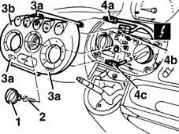

7065C10 air conditioning control panel - r+r
- Path
- Procedures > 70 FITTINGS > 7065 SEAT BELTS AND ACCESSORIES > 7065C ACCESSORIES AND DECORATIONS > 7065C10 air conditioning control panel - r+r
- Kind
- repair procedure (removal / refitting; the operation number is the code)
- Applies to
- all engines; all production periods
- Interactive page
- https://sloeber94.github.io/elrnDB-fMltpl/en/#/2892286
Applies to: all engines; all production periods
 Removing
Removing
 Refitting
Refitting2125C24 gear lever knob - r + r
1. Remove the fan control knob.
2. Undo the bolt.
3. Release the retainers (3a) and move the cowling (3b) slightly.
4. Disconnect the electrical connections (4a, 4b, 4c).
 | Name | Connector |
|---|---|---|
4a | Switch control unit |
| Name | Connector |
|---|---|---|
4b | Switch control unit |
| Name | Connector |
|---|---|---|
4c | Climate control system controls |

Applies to: all engines; all production periods
Refitting
RemovingCheck that the embellishment is not damaged.
Connect the electrical connections.
Position the embellishment and engage the retainers.
Tighten the bolt.
Fit the fan control knob.
2125C24 gear lever knob - r + r
Check that the switches on the embellishment are working.
Topics linked from this page (4)
- 2125C24 gear lever knob - r + r
- H80 Climate control system controls
- H090A Switch control unit ( FACIA )
- H090B Switch control unit ( FACIA )
Topics that link to this page (45)
- A05 ALARM LED NOT WORKING
- I10 DIRECTION INDICATORS / HAZARD WARNING LIGHTS / NOT WORKING
- I20 FOG LIGHTS NOT WORKING
- I21 REAR FOG LAMPS NOT WORKING
- J20 REARSCREEN AND DOOR MIRROR DEFROSTING NOT WORKING
- L10 CLIMATE CONTROL NOT COOLING
- L16 CLIMATE CONTROL RECIRCULATION NOT WORKING
- L56 HEATER RECIRCULATION NOT WORKING
- 2125C14 gear hand-lever mount bracket (one)- r r
- 2125C16 gear hand-lever - r r
- 2125C28 gear control lever - r r
- 2125C30 gear engagement cable - r r
- 5010B24 under-facia air ducts r r
- 5010C30 central air outlet on fascia - r+r
- 5010D18 top mixed air temperature sensor - r+r following electrical wiring check with heater case removed
- 5010D40 passenger compartment air sensor fan - r+r
- 5020A10 heater box - r+r
- 5020A50 heater radiator - r+r
- 5020B10 heater control support - r+r
- 5020B38 air distribution flap control cable - r+r
- 5020B42 air mixer flap control cable - r+r
- 5020B80 heater system wiring bundle - r r or replace
- 5040B30 expansion valve (tube orifice) - r+r
- 5040B64 sensor on evaporator for a/c ecu - r + r
- 5040C10 air conditioner box - r+r
- 5040C50 air conditioner heater radiator - r+r
- 5040C64 a/c evaporator - r+r
- 5040C10 air conditioner control support - r+r
- 5040C38 air distribution flap control cable - r+r with control support removed
- 5040C40 air mixer flap control cable - r + r
- 5040C52 air inlet and recirculation flap actuator - r r
- 5040C64 a/c manual control switch (one) - r+r
- 5040C90 air conditioner system wiring bundle - r r
- 5040D77 air conditioner mixer flap control motor - r r
- 5505A24 w/l and service switch mount - r+r
- 5505C31 under-facia wiring - r r
- 5505C41 cabin wiring - r r
- 5540C18 headlamp/light cluster alignment correction motor switch - r+r
- 5560B10 analogue control panel - r+r
- 5580C80 airbag system wiring bundle - r r or replace
- 5580M80 on-board navigator system wiring harness - r r
- 5580M84 navigation system mount junction unit - r r
- 7040A04 facia lower trim-r r
- 7040A11 control panel lid - r + r
- 7040A25 central facia trim - r r